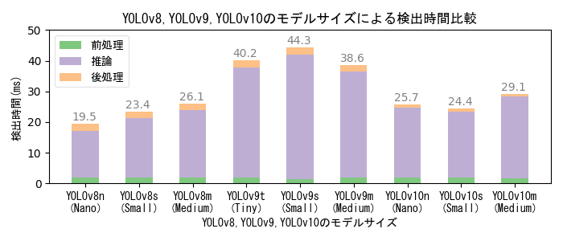

AIモデルYOLOv8・YOLOv9・YOLOv10の検出性能比較
概要
- 物体検出を行う有名なAI深層学習モデルにYOLOがあるが、YOLOには開発チームの異なる多くのバージョンが存在する。
2015 2016 2017 2018 2019 2020 2021 2022 2023 2024 +-----+-----+-----+-----+-----+-----+-----+-----+-----+----- v1 v2 v3 Joseph Redmon氏 v4 v7 v9 Alexey Bochkovskiy氏、Chien-Yao Wang氏チーム v5 v8 Ultralyticsチーム v6 Meituanチーム v10 精華大学チーム- 性能と使い勝手の両方において先行バージョンの良いところを取り入れる形で進化しているため、基本的に新しいバージョンほど高性能で使い勝手が良いが、 実用的な観点では、2020年のYOLOv5以降は使い勝手が似ており、YOLOのバージョンの違いよりも用意する学習データの違いが最終的な検出性能を左右する。
- ここでは複数のAIモデルで我が家のイシガメを学習させて検出性能を比較してみる。使用するAIモデルは以下の三種。
- 2023年にUltralyticsチームが公開したYOLOv8
- 2024年にChien-Yao Wangチームが公開したYOLOv9
- 2024年に精華大学チームが公開したYOLOv10
- YOLOv8を開発したUltralyticsは、Ultralytics版YOLO実行環境において、YOLOv8だけでなくYOLOv9とYOLOv10を実行可能にしている。
このUltralytics版のYOLOv9とYOLOv10は、開発元のChien-Yao Wang版YOLOv9および精華大学版YOLOv10とは細かい実装やバージョンが一致しない可能性があるが、
以下の点を踏まえて、Ultralytics版YOLO実行環境でYOLOv8,YOLOv9,YOLOv10を動かし実験することとした。
- YOLOv9は、2024年9月時点において、YOLOv9開発元公式GitHubにGPL-3.0 licenseの実装とその使用方法が記載されている一方で、 別リポジトリにてYOLOv9のMIT license版の実装し直しを進めており、現在まだバグが残っていて使用は控えるようにと記載されている。 現状の開発元YOLOv9実装は過渡的な位置づけであり、将来的にはMIT license版の実装を本命にする意向と推察される。
- YOLOv10は、YOLOv10開発元公式GitHubにAGPL-3.0 licenseの実装とその使用方法が記載されているが、 ultralytics版YOLO実行環境から利用する方法も併記されているため、Ultralytics版利用も公認された使用方法であり、同等の動作になることを期待できる。
- YOLOv8,YOLOv9,YOLOv10をultralytics版YOLO実行環境で学習させることで、学習時の多くのパラメータをデフォルト値で動かしても共通のパラメータ値で学習させることができる。 共通のパラメータ値が各モデルにとっての最適値とは限らないが、性能を比較する目的ではむしろ好都合と言える。
- Ultralytics版YOLO実行環境はYOLOv8インストールにより作成され（2024年9月時点）、本記事に示す方法でYOLOv8,YOLOv9,YOLOv10を学習（訓練）することで、YOLOv8と同じ方法で検出（推論）を行うことができる。
各モデルの学習（訓練）
- YOLOv8をインストールし、学習用のデータが準備できている必要がある。AIでカメを検出するを参照。
YOLOv8を訓練する方法
- テキストエディタで訓練スクリプト[train.py]を作成する。
from ultralytics import YOLO if __name__ == '__main__': model = YOLO("yolov8n.pt") results = model.train(data='mydata.yaml', epochs=100, imgsz=640)- YOLOv8にはサイズおよび精度の異なる5種類のモデルn,s,m,l,xがあり、この順にサイズが大きくなり処理時間が長くなる。 ここでは最も小さいnモデル（yolov8n.pt）をもとに転移学習している。yolov8s.pt、yolov8m.ptなど適宜使用するモデルを指定する。
- 訓練スクリプト[train.py]を実行する。
python train.py- 指定したモデルが無い場合は最初にダウンロードされる。yolov8n.ptは6.24MB、yolov8s.ptは21.5MB、yolov8m.ptは49.7MB。
- 学習結果が runs\detect\ フォルダの train から始まる名前のフォルダに格納される。
- weights\last.ptが最終の学習モデル（重みデータ）で、weights\best.ptが最も精度が良かった学習モデル（重みデータ）である。
YOLOv9を訓練する方法
- テキストエディタで訓練スクリプト[train.py]を作成する。
from ultralytics import YOLO if __name__ == '__main__': model = YOLO("yolov9t.pt") results = model.train(data='mydata.yaml', epochs=100, imgsz=640)- YOLOv9にはサイズおよび精度の異なる5種類のモデルt,s,m,c,eがあり、この順にサイズが大きくなり処理時間が長くなる。 ここでは最も小さいtモデル（yolov9t.pt）をもとに転移学習している。yolov9s.pt、yolov9m.ptなど適宜使用するモデルを指定する。
- ここで指定しているのはUltralytics版実行環境に用意されているYOLOv9学習済モデルであるため、最初に使用する前に自動的にダウンロードされる。
- YOLOv8,YOLOv10に比べて学習時に多くのメモリを使用する様子。 メモリ不足になる場合は、batch数をデフォルト値の半分（batch=8）にするか自動モード（batch=-1）にするなど調整する。
- 訓練スクリプト[train.py]を実行する。
python train.py- 指定したモデルが無い場合は最初にダウンロードされる。yolov9t.ptは4.73MB、yolov9s.ptは14.6MB、yolov9m.ptは39.0MB。 ちなみに、開発元のYOLOv9学習済モデルは名称とファイルサイズが異なり、yolov9-t.ptはエラーで取得できずサイズ不明（2024年9月時点）、yolov9-s.ptは19.4MB、yolov9-m.ptは63.3MBとなっている。
- 学習結果が runs\detect\ フォルダの train から始まる名前のフォルダに格納される。
- weights\last.ptが最終の学習モデル（重みデータ）で、weights\best.ptが最も精度が良かった学習モデル（重みデータ）である。
YOLOv10を訓練する方法
- 学習済みモデルをYOLOv10開発元GitHubから取得する（以下はWindows PowerShellのwgetを利用して取得する例）。
wget https://github.com/THU-MIG/yolov10/releases/download/v1.1/yolov10n.pt -OutFile yolov10n.pt wget https://github.com/THU-MIG/yolov10/releases/download/v1.1/yolov10s.pt -OutFile yolov10s.pt wget https://github.com/THU-MIG/yolov10/releases/download/v1.1/yolov10m.pt -OutFile yolov10m.pt- YOLOv10にはサイズおよび精度の異なる6種類のモデル n,s,m,b,l,x があり、この順にサイズが大きくなり処理時間が長くなる。ここでは小さい3モデル（yolov10n.pt、yolov10s.pt、yolov10m.pt）を取得している。
- yolov10n.ptは10.9MB、yolov10s.ptは31.4MB、yolov10m.ptは63.8MB。
- テキストエディタで訓練スクリプト[train.py]を作成する。
from ultralytics import YOLO if __name__ == '__main__': model = YOLO("yolov10n.pt") results = model.train(data='mydata.yaml', epochs=100, imgsz=640)- ここでは最も小さいtモデル（yolov10n.pt）をもとに転移学習している。yolov10s.pt、yolov10m.ptなど適宜使用するモデルを指定する。
- 訓練スクリプト[train.py]を実行する。
python train.py - 学習結果が runs\detect\ フォルダの train から始まる名前のフォルダに格納される。
- weights\last.ptが最終の学習モデル（重みデータ）で、weights\best.ptが最も精度が良かった学習モデル（重みデータ）である。
検出性能の比較
- 検出数は画像に映り込んでいるカメを正しく検出した回数、誤検出数は画像中のカメではないモノをカメとして検出した回数。
- 検出数が多く誤検出数が少ない方が良い。最終的には用途に応じた検出数と誤検出数のバランスを踏まえて適切な条件を選択する。
AIモデルとEpoch数（学習回数）による性能比較
- Epoch数が多いほど良いわけではない。学習データの品質および性能評価指標の推移曲線に基づいて適切なEcoch数を選択する。
- 本実験の学習画像は、撮影日や撮影位置の異なる複数の撮影映像から抽出した640x640画素サイズの454画像。
- 学習時間は使用機器性能・モデルサイズ・学習パラメータ値によって異なり、学習画像数やEpoch数に比例する。
AIモデルとモデルサイズによる性能比較

- YOLOv10はYOLOv8・v9に比べて検出性能が低い。また、YOLOv9はYOLOv8・v10に比べて検出時間が長く、 実験に用いた低性能GPUマシンでは秒30コマのリアルタイム処理を実現できない。
- 大きいモデルの方が検出性能が高いが、大きいモデルで学習するためには高性能のGPUマシンが必要になる。
- YOLOv8・v10の画像毎の検出時間はいずれも33ms以下であり、フルHD解像度で秒30コマのリアルタイム検出を実現できる。
- 本実験の学習画像は、撮影日や撮影位置の異なる複数の撮影映像から抽出した640x640画素サイズの454画像。Epoch数は100。
- 学習時間は使用機器性能・モデルサイズ・学習パラメータ値によって異なり、学習画像数やEpoch数に比例する。 低性能GPUマシンでの学習時間実測値は、YOLOv8nが12分、YOLOv8sが20分、YOLOv8mが236分、 YOLOv9tが24分、YOLOv9sが34分、YOLOv9mが56分、YOLOv10nが15分、YOLOv10sが40分、YOLOv10mが7時間34分、
感触
- 用途と使い方によって変わるだろうが、低性能GPUマシン前提の場合は総じてYOLOv8sの使い勝手が良い印象である。 YOLOv8sを使用して、学習データの質と量を向上させるのが得策だろう。
- YOLOv9・v10は発表されてからまだ時間が経っておらず、今後使い方や性能が向上する可能性がある。 また、YOLOv9のMIT license版実装の完成度が高まり使えるようになれば、ビジネス応用時の自由度が高まるため、 改めて性能を評価すべきだろう（Chien-Yao Wang氏チームの実装能力に期待している）。